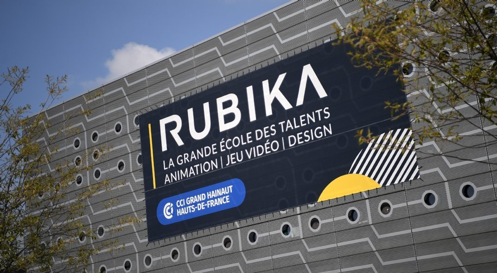

Découverte : Le Salon de Robotik
Immersion au salon !
J'ai trouvé ça génial d'avoir pu y aller et de découvrir plein d'objets qui sont en rapport avec la Technologie. Très belle journée que j'ai passé pour cet évenement.
L'ensemble des stands :

- Le drone Soccer se joue à l’aide de drones,
de manettes et de deux cerceaux servant de cages de but. Chaque partie se joue avec 6 à 10 joueurs,
répartis en deux équipes composées de 3 à 5 joueurs chacune.
Pour marquer des points, il faut faire passer son drone à travers le cerceau de l’équipe adverse sans faire tomber un adversaire. Pour gagner, l’équipe doit marquer plus de points que l’équipe adverse.
Les mouvements du drone sont reliés à la manette. - J’ai aimé le drone soccer parce que ça mélange le sport et l’informatique, ce qui change des sports classiques. J’ai trouvé ça cool de piloter un drone grâce à une manette. Ce que j’ai surtout aimé, c’est comprendre comment la technologie fonctionne derrière. On ne pilote pas le drone n’importe comment : il faut réfléchir à chaque mouvement. Le drone soccer m’a fait comprendre que l’informatique peut servir à faire beaucoup de choses, sans vraiment de limites. Le drone soccer m’a aussi plu parce que c’est un sport moderne, où la technologie est au centre du jeu. On apprend en s’amusant et on travaille en équipe.

- Cette école d'ingénieur développe et créer des robots sur pattes ou sur roues avec des versions amélioratives qui permettent aux robots d'accéder à de nouvelles fonctionnalités. Comme par exemple, un robot chien qui fonctionne à l'aide d'une manette pour le faire fonctionner. Mais aussi, des voitures qui se commande à l'aide d'une manette ps3.
- J'ai bien aimé cette école qui proposait cela, car je trouve ça ambitieux de créer toujours plus dans la perfection, mais également, de savoir comment les fabriquer. On a pu tester les voitures avec la manette, et c'était vraiment cool. J'ai passé un superbe moment pour cette école.

- Rubika, une école de développement dans le milieu du jeu vidéo mais aussi de design, a crée un jeu de combat avec une histoire complète et agréable. Le jeu est en 3D, avec des graphismes détaillés. Les étudiants ont également crée d'autres jeux vidéos.
- En tout cas, on a pu testé avec des ordinateurs mis à disposition le jeu vidéo dont il avait terminé de le développer, et le jeu était super ! J'ai adoré également l'explication de la conception du jeu, avec tout le travail de design, de l'histoire du jeu, et puis le développement. Un superbe moment que j'ai passé.